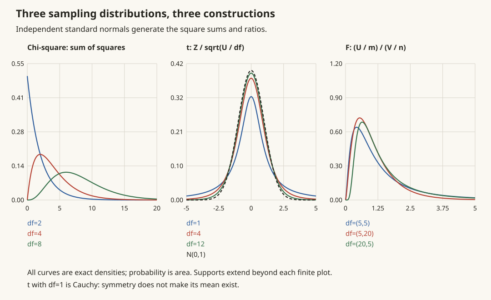

统计 I · 统计量与抽样分布
概率论与数理统计的分工一句话：概率论从分布推样本（演绎），统计从样本推分布（归纳）。归纳要有依据，依据就是"统计量自身的分布"——抽样分布。本页立好这套语言，核心资产是三大分布（χ²/t/F）与正态总体抽样定理，它们是后面估计与检验全部公式的发动机。
1. 基本语言
总体：待研究的随机变量 \(X\)（分布含未知参数 \(\theta\)）；样本 \(X_1, \dots, X_n\)：i.i.d. 于总体（观测前是随机变量，观测后是数据——这个双重身份是统计一切"绕"的根源）；统计量：样本的函数 \(T(X_1,\dots,X_n)\)，不含未知参数（\(\bar X\) 是统计量，\(\frac{\bar X - \mu}{\sigma}\) 不是）。
两大标配统计量：
为什么除 \(n-1\)：\(E\big[\sum(X_i - \bar X)^2\big] = (n-1)\sigma^2\)——用 \(\bar X\) 代替真 \(\mu\) 会"偷走"一个自由度（\(\sum(X_i - \bar X) = 0\) 这条约束），除 \(n-1\) 恰好修正成无偏（统计 II 的无偏性在此预演）。
基本事实（任何总体，只要 \(EX = \mu, DX = \sigma^2\)）：\(E\bar X = \mu\)，\(D\bar X = \frac{\sigma^2}{n}\)，\(ES^2 = \sigma^2\)。
2. 三大抽样分布

χ² 分布 \(\chi^2(n) = \sum_{i=1}^n Z_i^2\)（\(Z_i\) i.i.d. \(N(0,1)\)）。\(E = n,\ D = 2n\)；可加性 \(\chi^2(m) + \chi^2(n) = \chi^2(m+n)\)（独立时；概率 III 可加族的成员）；\(n\) 大时近似正态。——"平方误差的分布"。
t 分布 \(t(n) = \dfrac{Z}{\sqrt{\chi^2(n)/n}}\)（分子分母独立）。对称钟形、比正态厚尾（小样本的不确定性体现在尾巴上）；\(n \to \infty\) 时 \(\to N(0,1)\)（\(n \geq 45\) 左右可用正态近似）。——"用估计的 σ 替换真 σ 之后，正态变成的样子"。
F 分布 \(F(m, n) = \dfrac{\chi^2(m)/m}{\chi^2(n)/n}\)（独立）。性质：\(\frac{1}{F} \sim F(n, m)\)（查表下分位点的技巧 \(F_{1-\alpha}(m,n) = \frac{1}{F_\alpha(n,m)}\)）；\(t^2(n) = F(1, n)\)。——"两个方差的比"。
三者的家谱：全部由正态出生，χ² 是平方和、t 是"正态 ÷ χ² 根"、F 是"χ² 比 χ²"——记家谱不记密度（密度从不直接用，用的是分位点表）。
3. 正态总体抽样定理（本页顶点）
定理 设 \(X_1, \dots, X_n\) i.i.d. \(N(\mu, \sigma^2)\)，则：
逐条评注：第 1 条是正态线性封闭性（概率 III 性质 4）；第 2 条的自由度 \(n-1\) 呼应"偷走一个自由度"；第 3 条说明均值与方差独立是正态总体的特权（一般分布不成立——它是 t 分布定义中"分子分母独立"的来源）；第 4 条是实用之王——\(\sigma\) 未知时关于 \(\mu\) 的一切推断（区间、检验）都从它出发。
两总体版本（统计 III/IV 要用）：方差比 \(\dfrac{S_1^2/\sigma_1^2}{S_2^2/\sigma_2^2} \sim F(n_1 - 1, n_2 - 1)\)；均值差在方差相等假设下走合并方差的 t 分布。
大样本兜底：总体不正态时，CLT（概率 V）保证 \(\bar X\) 近似正态——正态总体公式在大样本下近似通用，这是它们统治应用统计的原因。
4. 典型例题
例 1（抽样定理直接应用） \(X \sim N(21, 4)\)，\(n = 25\)，求 \(P(\bar X > 21.8)\)。 解：\(\bar X \sim N(21, \frac{4}{25})\)，\(P = 1 - \Phi\big(\frac{0.8}{0.4}\big) = 1 - \Phi(2) = 0.0228\)。（注意标准差缩成 \(\sigma/\sqrt n\)——"平均值比个体稳定"的定量表达。）
例 2（χ² 用法） 正态总体 \(\sigma^2 = 4\)，\(n = 10\)，求 \(P(S^2 > 8.04)\)。 解：\(\frac{9 S^2}{4} \sim \chi^2(9)\)，\(P\big(\chi^2(9) > \frac{9 \times 8.04}{4} = 18.09\big) \approx 0.034\)（查表 \(\chi^2_{0.05}(9) = 16.92\)，略小于 0.05 一档）。
例 3（家谱辨认） \(X_1, ..., X_5\) i.i.d. \(N(0,1)\)，问 \(Y = \dfrac{X_1}{\sqrt{(X_2^2 + X_3^2 + X_4^2 + X_5^2)/4}}\) 服从什么分布？ 解：分子 \(N(0,1)\)，分母是独立的 \(\sqrt{\chi^2(4)/4}\) ⇒ \(Y \sim t(4)\)。——考试就考"报家门"，认结构即可。\(\blacksquare\)
下一页：用样本猜参数——点估计。MLE 与 Cramér–Rao 下界是主菜。